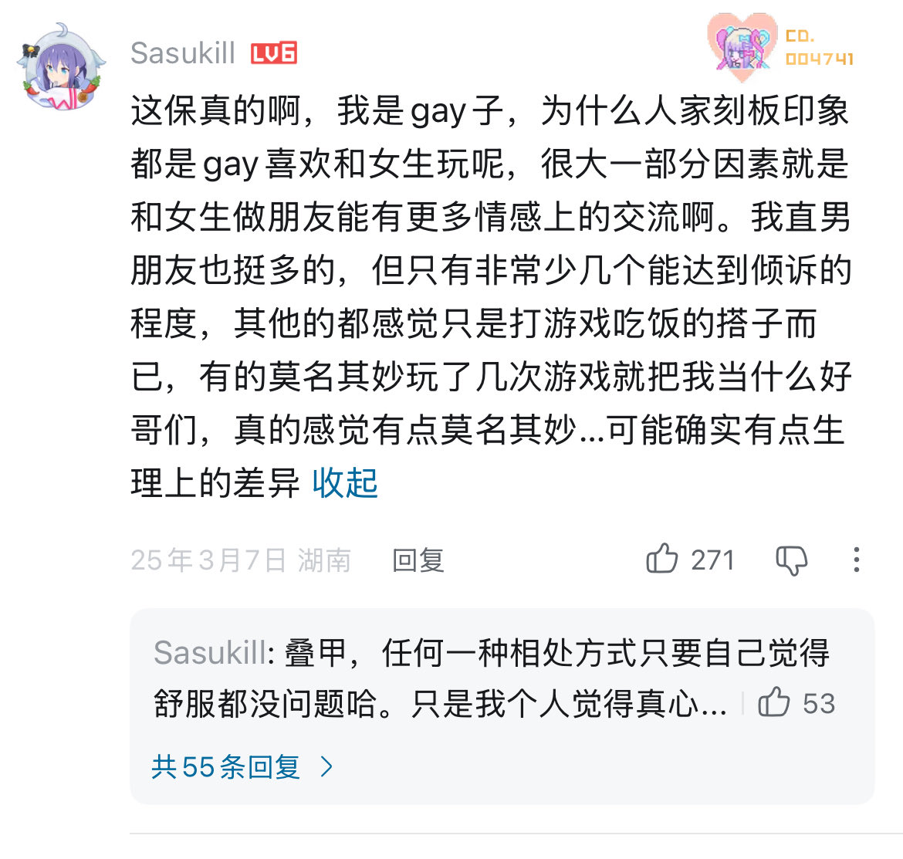

因为男同被描述为gay，女同被描述为百合，而且之前看过一个帖子说男的因为之前还没有多元性的社会教育男性不能软弱与懦弱，所以内心软弱，表达出柔软脆弱的男性会被排挤嘲笑，所以男性友谊是没有承担倾诉情绪的功能的，而女性友谊似乎更容易倾诉，夸赞，安慰，而不是，你居然分手了宿友普天同庆，从宝宝和儿子这两个称呼也可以看到差别，女同更多被描述为女性互动，男同传世之作苦命鸳鸯，吕布董卓，被认为是好笑的，男同也需要推动恋情，所以会有傲娇和撒娇，这不适合一些社会上没有接受过多元知识的男性的从小的性观念，以前中国旧社会说男的他妈不能傲娇和撒娇，当然这是不对的，应该打破只有异性恋的社会价值观
